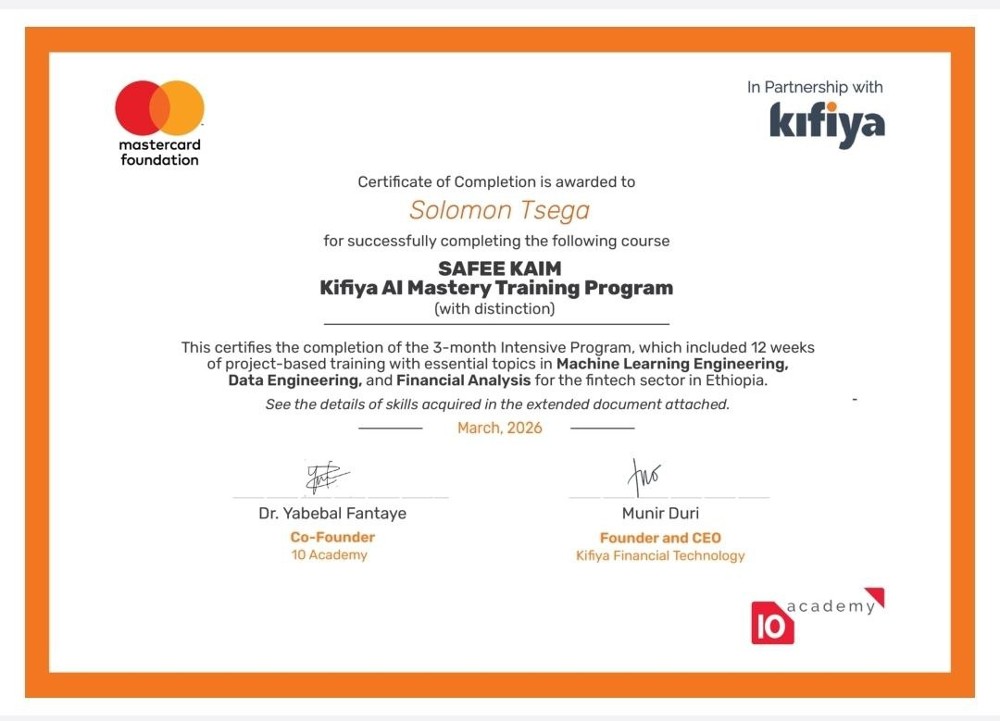
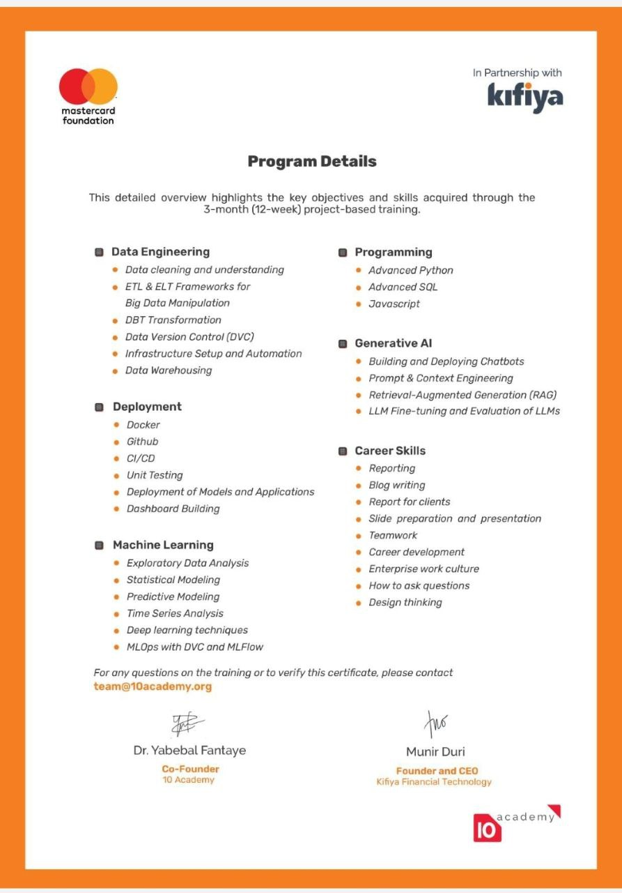
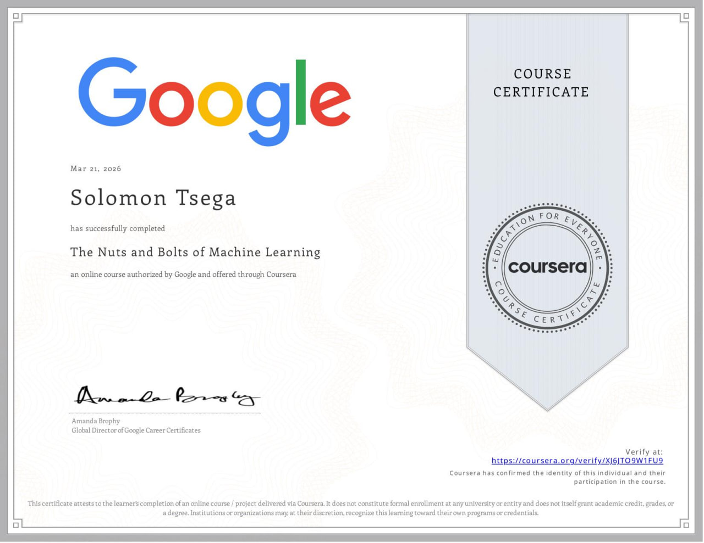
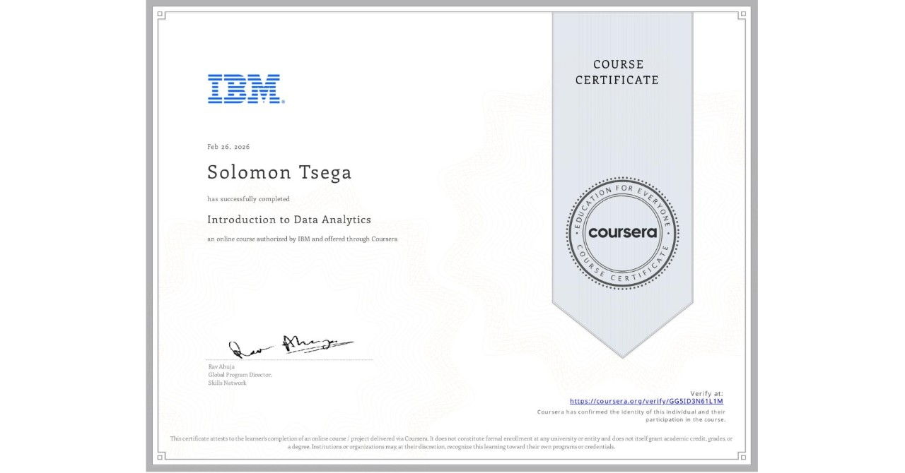
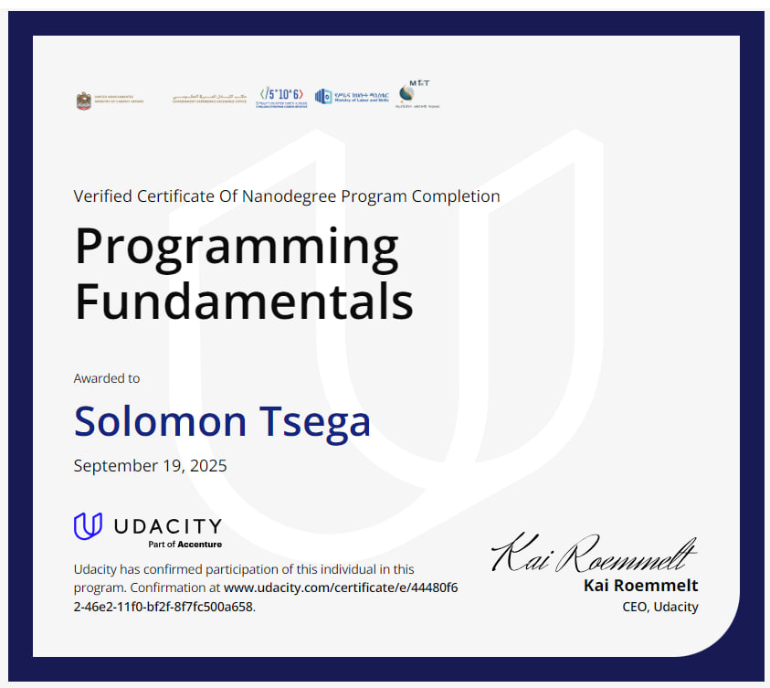
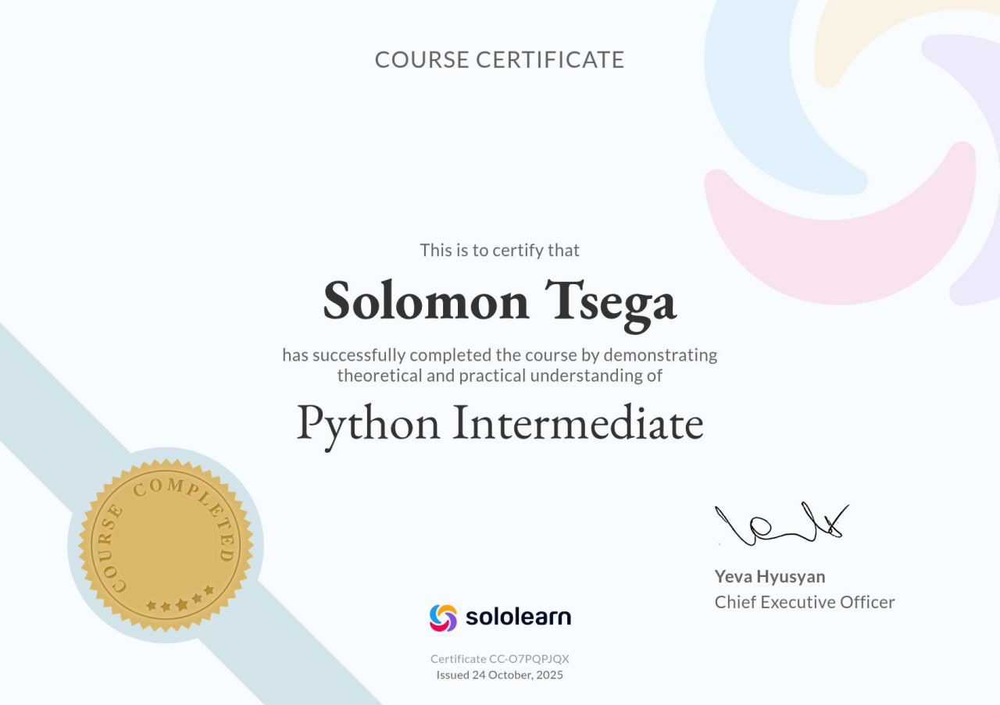
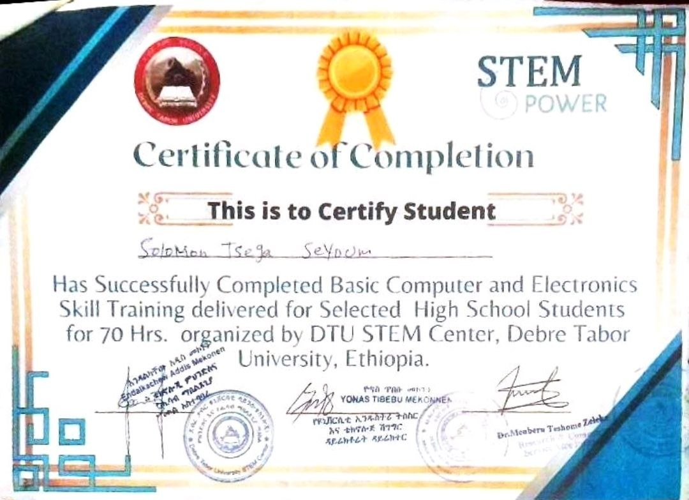
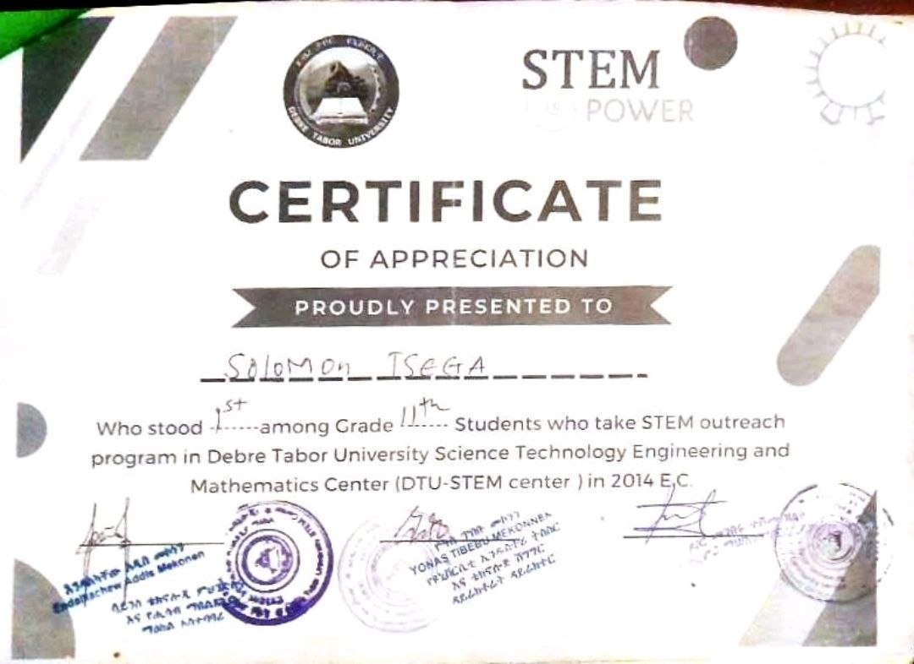

Academic & Professional Credentials
A journey of continuous learning, academic excellence, and technical specialization. Here are the certifications and honors I've earned along the way.
KAIM Professional AI Specialist
Knowledge AI Model Certification
- Mastery of Retrieval-Augmented Generation (RAG) and Large Language Model (LLM) orchestration for complex problem-solving.
- Advanced proficiency in evaluating model architectures, latency optimization, and knowledge grounding.
- Specialized expertise in deploying production-ready AI systems with a focus on systemic reliability.

KAIM Advanced Technical Insights
Advanced AI Modeling Details
- Deep technical exploration of transformer-based architectures, including attention mechanisms and parameter tuning.
- Specialized knowledge in model quantization, fine-tuning, and handling edge-case behaviors in generative systems.
- In-depth analysis of AI-grounded reasoning and system-driven optimization for knowledge retention.

Elevvo NLP & Language AI Pathways
- Advanced specialization in Natural Language Processing, focusing on semantic analysis and language understanding.
- Proficiency in building sophisticated text processing pipelines and deploying sentiment analysis frameworks.
- Mastery of state-of-the-art transformer models for complex linguistic tasks and contextual reasoning.
Stanford Machine Learning Specialization
Machine Learning Specialization by Andrew Ng
- Expertise in supervised learning algorithms, including precision-driven regression and high-accuracy classification.
- Mastery of unsupervised learning techniques for pattern discovery, clustering, and dimensional reduction.
- Advanced implementation of neural networks and complex recommender systems for data-driven insights.

Data Analytics Professional
Professional Certificate
- Advanced data engineering and analytical skills, emphasizing data integrity, cleaning, and lifecycle management.
- Mastery of SQL for complex data manipulation and R/Tableau for high-impact statistical visualizations.
- Execution of end-to-end data projects designed to extract actionable intelligence from fragmented datasets.

Excel Basics for Data Analysis
Coursera Certification
- Advanced proficiency in utilizing Excel for comprehensive data analysis and robust data interpretation.
- Mastery of complex data visualization techniques and dashboard creation for actionable business insights.
- Implementation of foundational data modeling and transformation workflows in spreadsheet environments.
Essentials with Azure Fundamentals
Microsoft | Offered through Coursera
Studying Microsoft Azure through Azure Fundamentals helps me apply machine learning and data science in real-world scenarios. It gives me the ability to manage data, use scalable computing resources, and deploy models in the cloud instead of just building them locally.
Through Coursera, I gained an understanding of cloud-based tools and services that support the full ML pipeline, making my skills more practical and industry-ready.
AI & Deep Learning Foundations
- Comprehensive understanding of neural network topologies, deep learning paradigms, and ethical AI frameworks.
- Specialization in the societal impact and technical governance of generative AI and computer vision systems.
- Mastery of fundamental AI architectures and their application in solving complex industrial challenges.

Merit-Based Academic Scholarship
- Prestigious recognition awarded for exceptional academic performance and top-tier examination results.
- Selected based on elite achievement in the Ethiopian University Entrance Examination (EUEE) and University Admission Test (UAT), with a score of 567/600.
- Recognition of superior intellectual capacity and commitment to rigorous academic excellence.
Distinction of Highest Academic Achievement
- Consistent record of achieving the highest academic scores in technical and mathematical domains.
- Demonstrated mastery of complex subject matter through disciplined research and competitive performance.
- Recognition of elite analytical thinking and dedication to mastering advanced technical curriculums.
National Stem Excellence (EUEE)
Ethiopian University Entrance Examination
- Top-tier performance in national standardized examinations, specifically in advanced mathematics and physics.
- Recognition of elite analytical and problem-solving skills at a national level.
- High-ranking percentile achievement representing academic rigor and intellectual capacity.

Full-Stack Programming Architecture
Web Systems Core
- Mastery of core web technologies (HTML5, CSS3, ES6+) with a focus on semantic structure and interactive systems.
- Proficiency in building high-performance, responsive front-end architectures with modern design patterns.
- Understanding of the full software development lifecycle, from system design to cross-platform deployment.

Advanced Front-end Engineering
SoloLearn Certification
- Specialization in modern front-end design, focusing on component-based architecture and responsive paradigms.
- Expertise in crafting sophisticated user interfaces using advanced CSS3 and interactive JavaScript.
- Optimization of UI/UX for performance, accessibility, and professional fidelity.
Advanced Python Systems Development
SoloLearn Certification
- Mastery of functional and object-oriented programming (OOP) paradigms for scalable system architecture.
- Proficiency in advanced data structures, algorithmic optimization, and asynchronous programming in Python.
- Implementation of sophisticated data processing libraries for high-level technical solutions.

SQL Mastery
Relational Database Specialization
- Advanced proficiency in architecting complex relational queries for cross-functional data extraction.
- Implementation of robust database design principles, including relational normalization and data integrity.
- Proficiency in optimizing data retrieval workflows for scalable application performance.
High School Exposures
STEM Computer Training
Foundational Technical Development
- Foundational immersion in computer programming, covering the basics of C++, HTML, and CSS.
- Hands-on, project-based engagement with digital electronics and fundamental circuit design.
- Demonstrated high potential and early passion for advanced computational thinking and hardware-software integration.

STEM Outreach Summer Camp
Applied Scientific Engagement
- Active participation in intensive, hands-on scientific and technical workshops.
- Collaborative problem solving and practical applications in a fast-paced environment.
- Exceptional foundation for advanced technical rigor and academic excellence.
